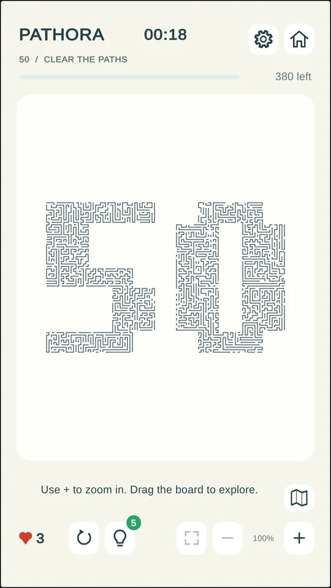
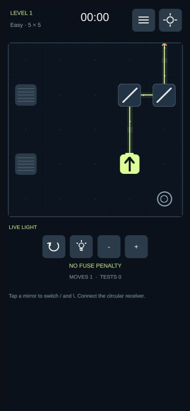

AN INDEPENDENT CREATIVE STUDIO
Small discoveries.
Room for wonder.
We make games and animation.
Thoughtful little worlds to explore,
one curious moment at a time.
Explore our games↓MADE FOR A CURIOUS MIND
01 — 02 / OUR GAMES01 / LOGIC & DISCOVERY
PathoraFind your clear path.
A tangle of arrows. A moment of focus. Find the right order, clear the board, and turn a little complexity into a satisfying all-clear.
Campaign puzzles, daily discoveries and Free Play challenges. Take your time and find your way.
Explore Pathora ↗Browser play available · Mobile editions in testing
one clear path
at a time.
A LOOK INSIDE THE GAME
02 / LIGHT & POSSIBILITY
LightoraA little light.
A new way through.
A laser. A few mirrors. One satisfying moment when it all connects. Turn mirrors, reach the crystals and guide the beam through the dark.
Explore a campaign, daily puzzles and custom boards. A different kind of puzzle, built around seeing things from another angle.
Discover Lightora ↗In development for Android & Web
a different angle.
a new possibility.
A LOOK INSIDE THE GAME
THE STUDIO
Playful ideas.
Thoughtfully made.
Afsanora is an independent studio working in games and animation. We are drawn to clear ideas, expressive worlds and the small discoveries that make you pause, look again, and smile.
Our games explore that spirit through puzzles: finding a path, changing an angle, and watching the pieces come together. This is where you can follow what we are making and find your next game.